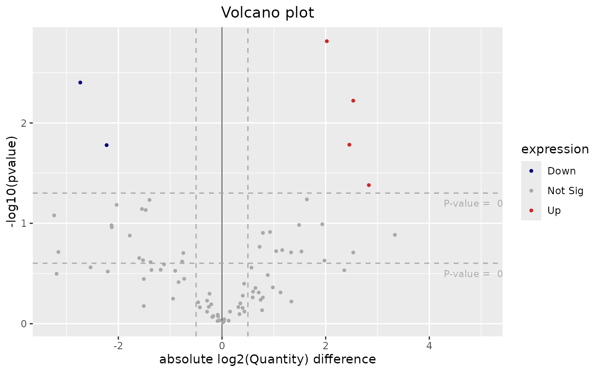

Plot Volcano Plot for Differential Expression Analysis
Source:R/differential_expression.R
plotVolcano.RdplotVolcano generates a volcano plot to visualize differential
expression results.
Arguments
- tableDE
A
data framecontaining differential expression results with columns 'ID', 'log2FC', 'pvalue', and 'Gene'.- pFilter
A
numericvalue specifying the p-value threshold for significance. Default is 0.05.- fcFilter
A
numericvalue specifying the log2 fold-change threshold for significance. Default is 0.5.
Details
This function creates a volcano plot where differentially expressed genes are categorized as 'Up', 'Down', or 'Not Sig' based on the provided p-value and log2 fold-change thresholds. Points on the plot are color-coded to indicate their expression status.
Examples
library(SummarizedExperiment)
# Load multiAssayExperiment object
data("dda_example")
# Get SummarizedExperiment object
se <- dda_example[["Proteome"]]
colData(se) <- colData(dda_example)
# Preprocess the proteome assay
result <- preprocessProteome(se, normalize = TRUE)
# Call the function to perform differential expression analyis
de <- performDifferentialExp(se = result, assay = "Intensity",
method = "limma", reference = "1stCrtl", target = "EGF",
condition = "treatment")
# Plot the volcano plot from the result
plotVolcano(de$resDE)
